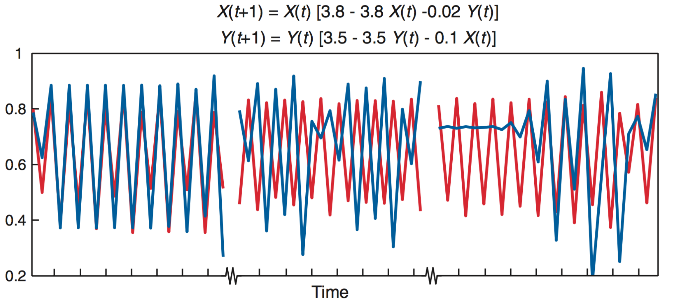
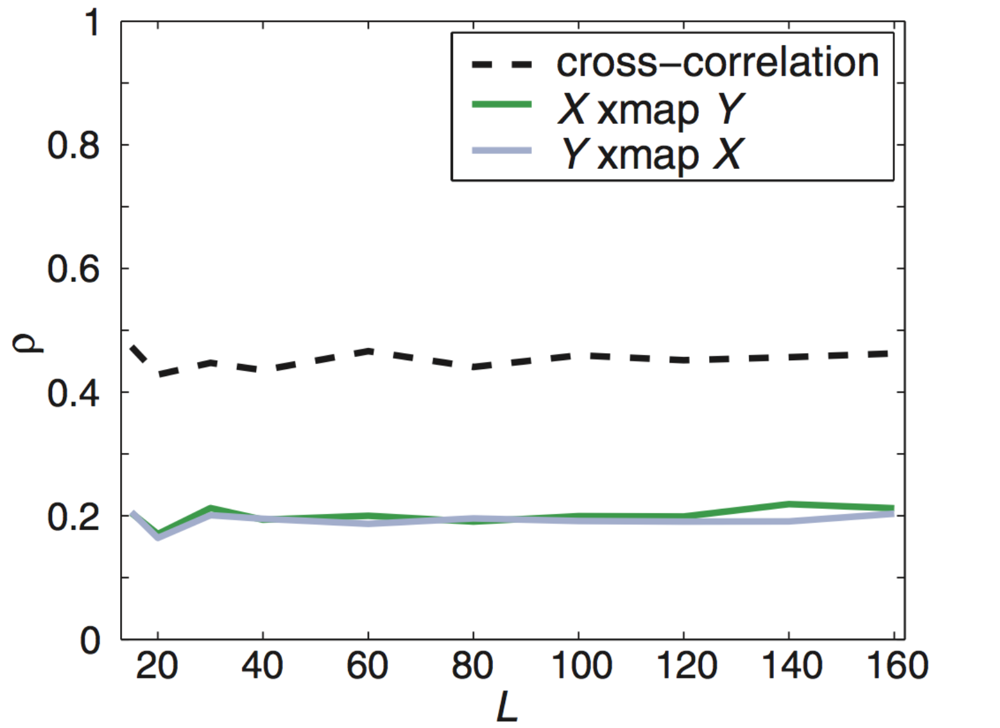

State-space reconstruction
A system with two state variables
$$H'=aH-bHL$$
$$L'=cHL-dL$$
$H$ hares, $L$ lynxes
hare birth rate $a$, predation rate $b$,
consumption rate $c$, death rate $d$
Solve for H(t), L(t) by numerical integration

Attractor is a limit cycle

A more complex system
$$x'=\sigma(y-x)$$
$$y'=x(\rho-z)-y$$
$$z'=xy-\beta z$$
The Lorenz attractor

Nonlinear forecasting
Reconstruct attractor ("library") from time series
Use attractor to make short-term predictions
(Sugihara and May, 1990)Why short-term?
Trajectories in chaotic attractors diverge
$$ \lvert \delta \textbf{Z}(t)\rvert \approx e^{\lambda t}\lvert\delta\textbf{Z}_0\rvert$$
$\lambda$ is the Lyapunov exponent
(so with chaos, $\lambda>0$)
How to forecast
- Choose an embedding dimension $E$ and lag $\tau$
- Each point in $E$-dimensional space: $\{x_t,x_{t-\tau},x_{t-2\tau},...,x_{t-(E-1)\tau}\}$
- Construct these points from the time series
- Define a point to predict ("predictee")
- See where predictee's $E+1$ nearest neighbors wind up $t$ steps into the future
- Measure correlations $\rho$ between predictee's observed future state and neighbors' weighted predictions
Choosing $E$ and $\tau$
An unsolved problem
Use $E$ (and $\tau$) that yield best predictions

Observational noise v. chaos

So... this isn't a module on prediction per se
Implications of state-space reconstruction
We can detect underlying structure
We can detect and predict without understanding
New claim: We can infer causal interactions
Takens' theorem
Very roughly, the system's attractor is diffeomorphic to (can be mapped without loss of information) to the individual attractors of the state variables in some delay-embedding space.
Manifolds and shadow manifolds

Introduction to Takens' Theorem
Causal inference
Through their shadow manifolds, variables in the same dynamical system can predict each other.
If $X$ drives $Y$, increasing the number of observations of $Y$ should improve predictions of states of $X$.
Convergent cross-mapping
To infer if $X$ drives $Y$:
- Construct the shadow manifold of $Y$, $\pmb{M}_Y$ (for some $E$, $\tau$). (Each point in $\pmb{M}_Y$ is given by $\vec{y}(t) = \{y_t,y_{t-\tau},y_{t-2\tau},...,y_{t-(E-1)\tau}\}$.)
- For each $X(t)$, identify its analogues $\vec{x}(t)$ and $\vec{y}(t)$.
- Find the $E+1$ nearest neighbors of $\vec{y}(t)$ and weight them by their Euclidean distances to $\vec{y}(t)$.
- To make a prediction $\hat{X}(t)$, multiply these weights by the respective points in $\pmb{M}_X$. Let $\rho$ be the correlation between $\vec{x}(t)$ and $\hat{X}(t)$.
- First make predictions from $\pmb{M}_Y$ constructed with only a few points in the time series, $L_\text{min}$, and then with many, $L_\text{max}$.
- If $\rho$ increases with more information on $\pmb{M}_Y$, $X$ drives $Y$.
Introduction to convergent cross-mapping
What do you expect $\rho$ to converge to?
Deterministic toy model
Under determinism, perfect predictability

What will observation error do?
$X$ and $Y$ do not interact but share a driver
Applied to predator-prey cycles

Anchovies, sardines, and SST

This is tempting, but first...